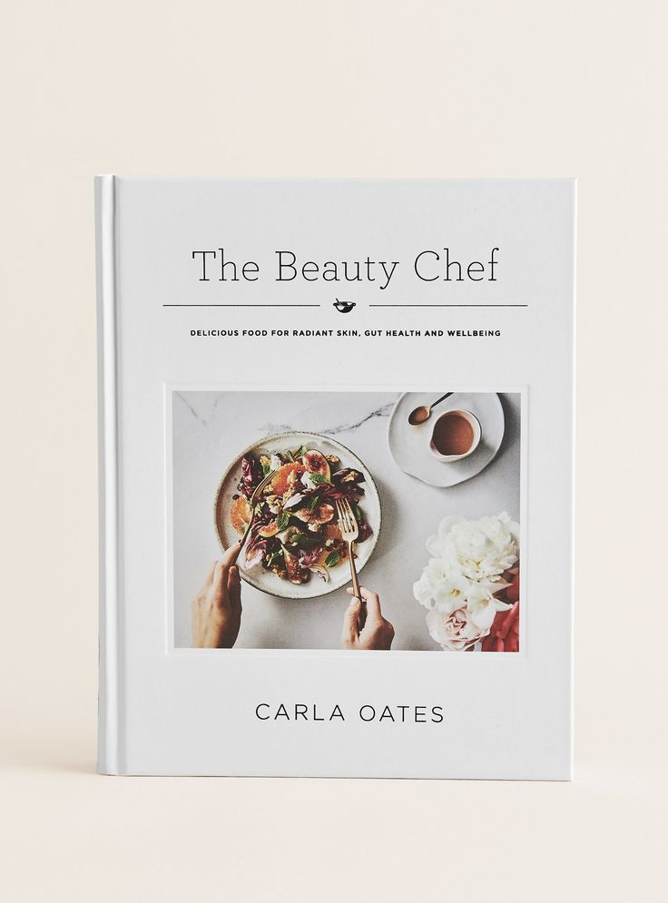

About us!
Welcome to our food-loving haven! Founded by Moriel Deri and Sarah Furmanski, both passionate 20-year-olds hailing from the vibrant city of Jerusalem, our culinary adventure was born out of a shared love for all things food. Fueled by the desire to turn their gastronomic passions into a delectable journey, Moriel and Sarah embarked on a mission to create a space where the joy of cooking and the pleasure of savoring exceptional dishes come together. Drawing inspiration from their diverse culinary backgrounds and the rich tapestry of flavors found in Jerusalem, they are dedicated to sharing their love for food through enticing recipes, captivating stories, and a genuine commitment to the art of creating delicious, memorable meals. Join us on this delectable odyssey, where every dish is a celebration of flavor, and every story is a testament to the shared joy of the culinary experience.
About our Book!
Introducing our recipe book, a collection born from the heart of our blog's most cherished and adored recipes. Moriel Deri and Sara, the masterminds behind this compilation, have carefully curated the best-loved and most-viewed dishes from our online kitchen. What makes this book truly special is the personal touch – each recipe comes with the credit of the talented individuals who shared it on our blog. It's a celebration of the taste of home, where every dish tells a story and carries the warmth of shared experiences. Whether you're a seasoned chef or a kitchen novice, our recipe book invites you to savor the flavors of home and join us in creating delicious memories one dish at a time.